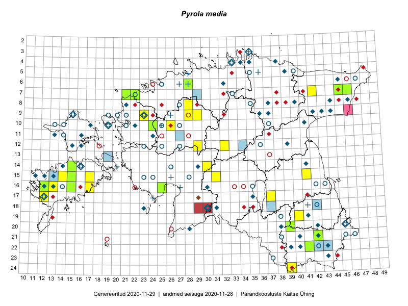

Pyrola media
Uuendatud: 2016-12-07
Kaardile koondatud taksonid: Pyrola media Sw.

Kaart põhineb 33 vaatlusel. Taime on leitud 23 ruudust.
| Ruut | Vaatleja(d) | Vaatlusaeg | Kirje tüüp | Viide andmebaasikirjele |
|---|---|---|---|---|
| 07-42 | Toomas Kukk, Peedu Saar | 2014-09-25 | ruut/ala | vaata PlutoFis |
| 19-40 | Malle Leht | 2015-07-18 | ruut/ala | vaata PlutoFis |
| 15-31 | Toomas Kukk, Tiit Hallikma | 2015-06-10 | ruut/ala | vaata PlutoFis |
| 19-27 | Meeli Mesipuu, Indrek Tammekänd | 2015-07-14 | ruut/ala | vaata PlutoFis |
| 19-27 | Meeli Mesipuu, Indrek Tammekänd | 2015-07-14 | punkt | vaata PlutoFis |
| 08-47 | Meeli Mesipuu, Timo Luhamäe | 2015-07-21 | ruut/ala | vaata PlutoFis |
| 05-41 | Meeli Mesipuu, Timo Luhamäe | 2015-07-24 | ruut/ala | vaata PlutoFis |
| 17-12 | Mari Reitalu | 2015-06-19 | ruut/ala | vaata PlutoFis |
| 17-12 | Mari Reitalu | 2015-06-19 | punkt | vaata PlutoFis |
| 16-12 | Mari Reitalu, Triin Reitalu | 2015-07-20 | ruut/ala | vaata PlutoFis |
| 16-12 | Mari Reitalu, Triin Reitalu | 2015-07-28 | punkt | vaata PlutoFis |
| 10-26 | Aat Sarv | 2015-08-12 | ruut/ala | vaata PlutoFis |
| 16-12 | Mari Reitalu | 2015-10-11 | punkt | vaata PlutoFis |
| 16-15 | Karin Kikas, Elle Rajandu | 2015-07-20 | ruut/ala | vaata PlutoFis |
| 05-41 | Timo Luhamäe, Meeli Mesipuu | 2015-07-24 | punkt | vaata PlutoFis |
| 16-15 | Elle Rajandu, Karin Kikas | 2015-07-20 | punkt | vaata PlutoFis |
| 07-38 | Kaili Orav, Silvia Pihu | 2015-06-17 | ruut/ala | vaata PlutoFis |
| 07-38 | Kaili Orav, Silvia Pihu | 2015-06-17 | punkt | vaata PlutoFis |
| 15-41 | Hannes Pehlak, Pille Säälik | 2015-06-24 | ruut/ala | vaata PlutoFis |
| 24-39 | Maret Gerz, Jaak-Albert Metsoja, Ott Luuk, Toomas Kukk, Meeli Mesipuu, Thea Kull | 2014-06-09 | ruut/ala | vaata PlutoFis |
| 09-28 | Aat Sarv | 2015-08-27 | ruut/ala | vaata PlutoFis |
| 10-26 | Jaak-Albert Metsoja, Ott Luuk, Maret Gerz | 2014-06-11 | ruut/ala | vaata PlutoFis |
| 08-28 | Aat Sarv | 2015-08-03 | ruut/ala | vaata PlutoFis |
| 09-23 | Hanna-Eliisa Luts, Tõnu Ploompuu | 2015-07-16 | ruut/ala | vaata PlutoFis |
| 20-39 | Rein Kalamees, Eerik Leibak | 2016-06-17 | ruut/ala | vaata PlutoFis |
| 09-29 | Toomas Kukk, Sander Laherand | 2016-07-06 | ruut/ala | vaata PlutoFis |
| 16-25 | Thea Kull, Helle Mäemets | 2016-07-04 | ruut/ala | vaata PlutoFis |
| 12-29 | Mari Reitalu, Eerik Leibak | 2016-07-06 | ruut/ala | vaata PlutoFis |
| 09-29 | Sander Laherand, Toomas Kukk | 2016-07-06 | punkt | vaata PlutoFis |
| 12-32 | Thea Kull, Raivo Kalle, Susanna Vain | 2016-07-21 | ruut/ala | vaata PlutoFis |
| 07-22 | Mari Reitalu, Eerik Leibak | 2016-07-07 | ruut/ala | vaata PlutoFis |
| 14-15 | Mari Reitalu, Sirje Azarov | 2016-08-09 | ruut/ala | vaata PlutoFis |
| 16-25 | Helle Mäemets, Thea Kull | 2016-07-04 | punkt | vaata PlutoFis |